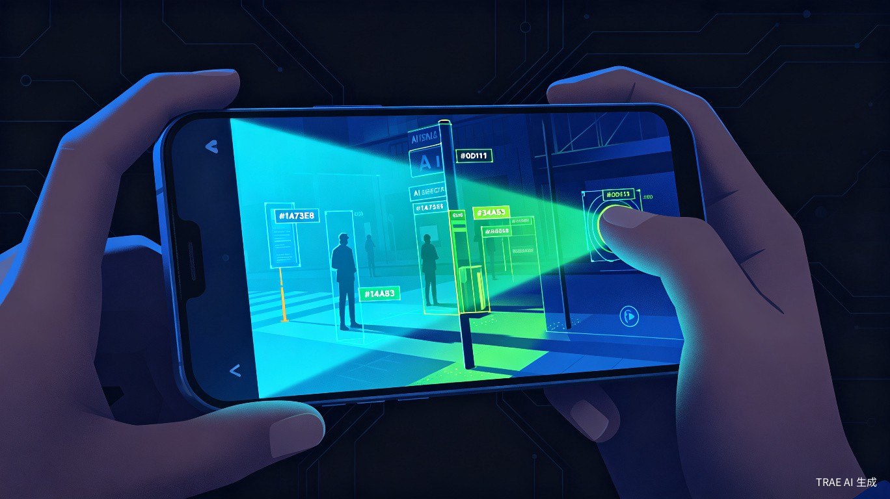
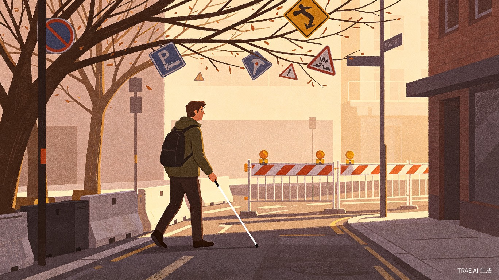
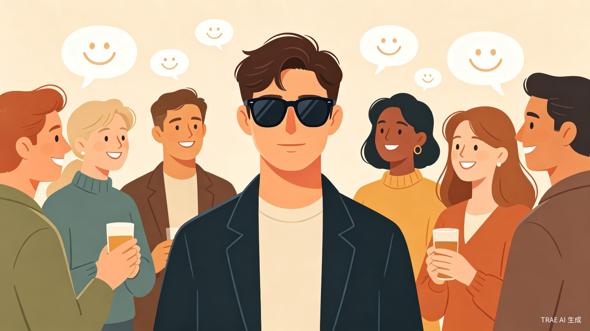
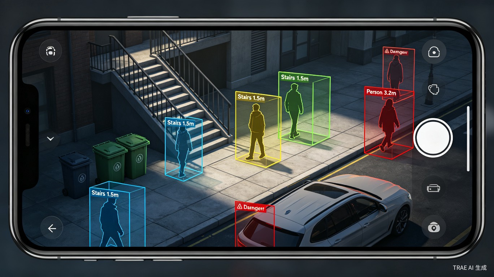
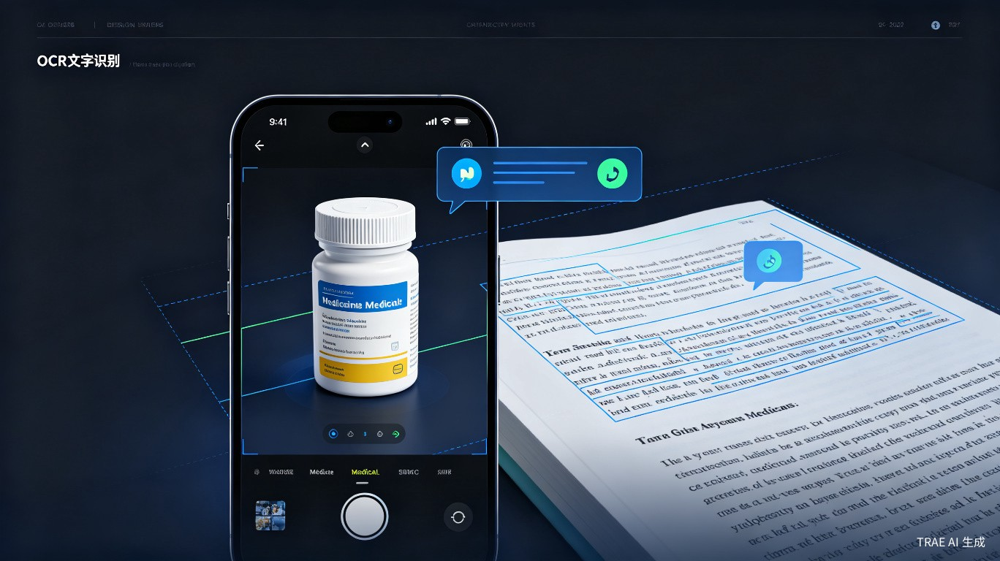
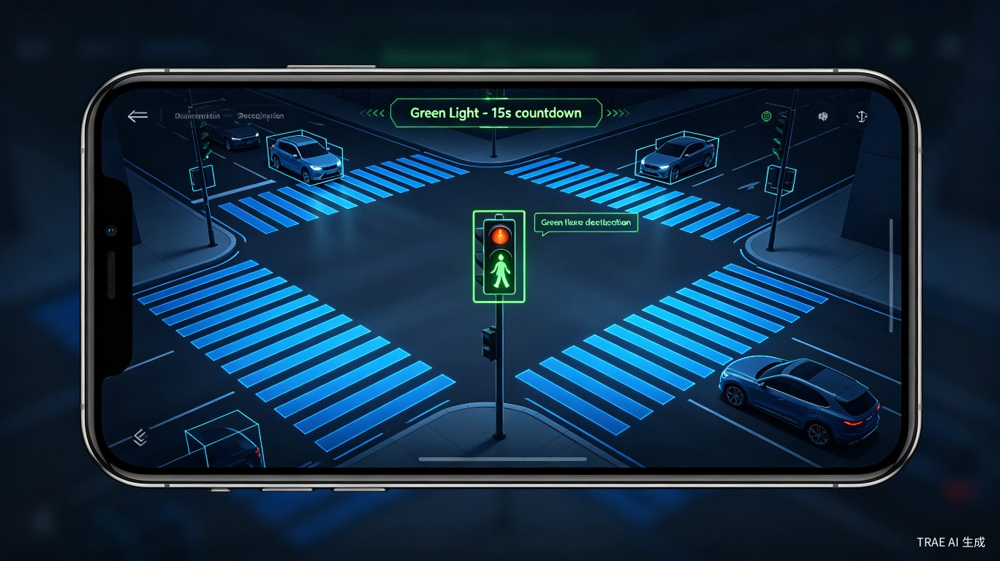
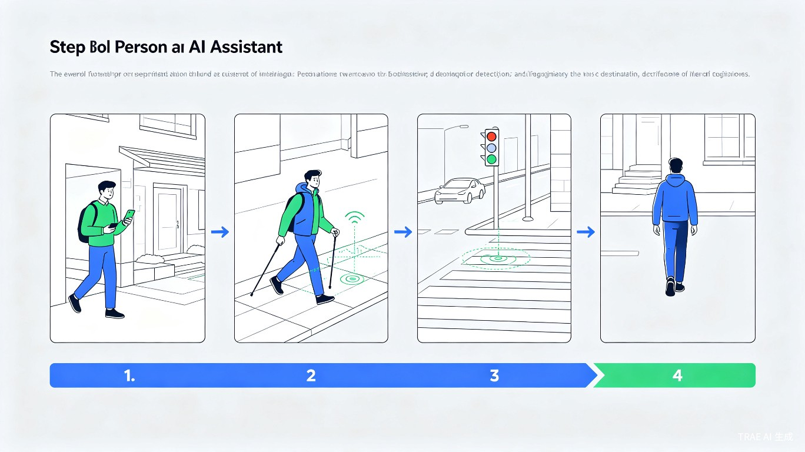
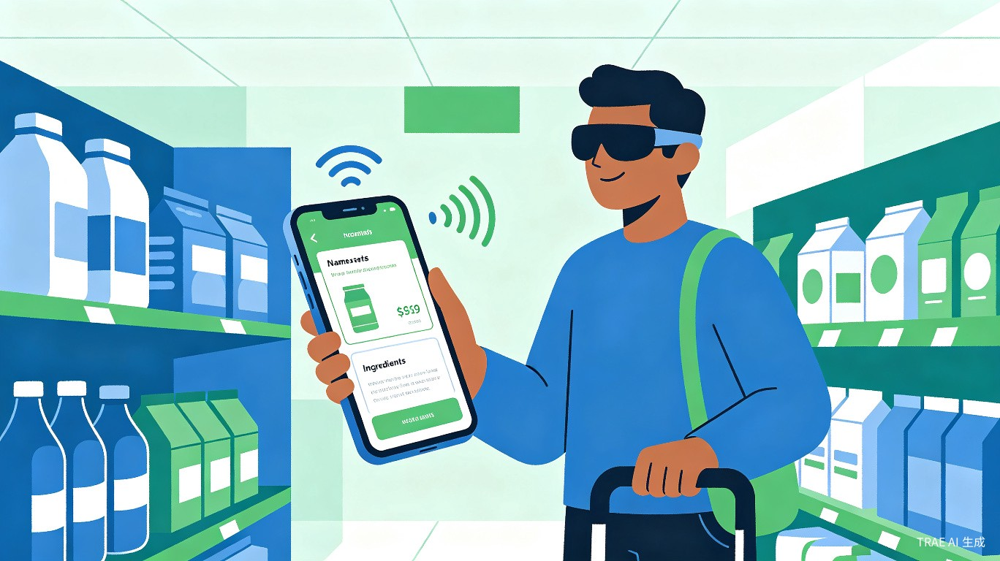
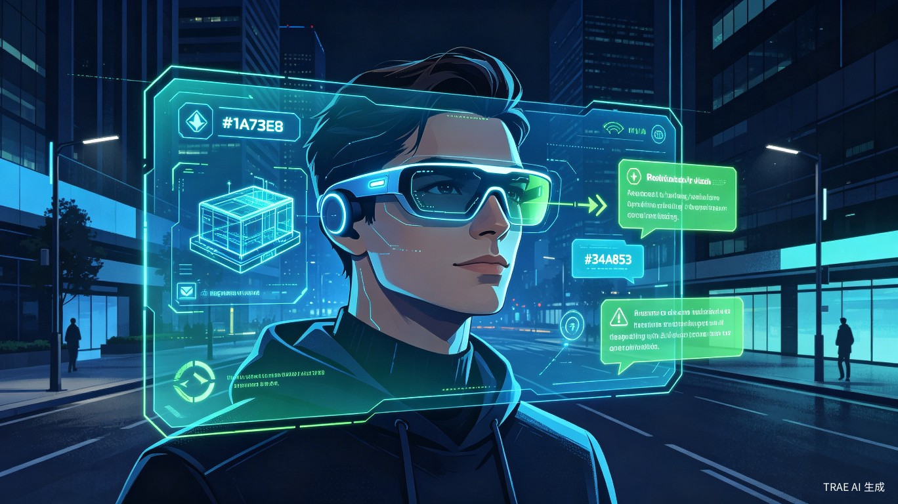

AI赋能视障群体，让世界触手可及

中国有超过1700万视障人士，他们在日常生活中面临着重重障碍
| 维度 | 传统盲杖 | 导盲犬 | Be My Eyes | 明眸 |
|---|---|---|---|---|
| 价格 | 低 | 极高 | 免费 | 中 |
| 功能 | 单一 | 有限 | 依赖人工 | 全面 |
| 便携性 | 一般 | 差 | 好 | 好 |
| 智能程度 | 无 | 生物本能 | 人工智能 | 端云AI |
| 离线能力 | 完全 | 完全 | 无 | 部分 |

无法识别红绿灯、台阶、障碍物，出行安全无保障，依赖他人陪同。
药品说明书、路牌、菜单等文字信息完全无法获取，生活信息严重缺失。

无法识别来人身份和表情，社交场景中缺乏关键信息，容易产生社交焦虑。
感知-推理-增强-交互四层架构，端侧实时响应与云端深度理解协同工作
flowchart TB
subgraph S1["📡 感知层"]
A1[后置摄像头]
A2[麦克风]
A3[陀螺仪]
A4[距离传感器]
end
subgraph S2["🤖 端侧推理"]
B1[YOLO目标检测]
B2[单目深度估计]
B3[轻量OCR]
B4[语音唤醒]
end
subgraph S3["☁️ 云端增强"]
C1[多模态大模型]
C2[场景理解]
C3[复杂OCR]
end
subgraph S4["🔊 交互层"]
D1[TTS语音播报]
D2[骨传导耳机]
end
S1 --> S2
S2 --> S3
S3 --> S4
S2 -.->|实时通道| S4
sequenceDiagram
participant U as 用户
participant W as 语音唤醒
participant R as 指令识别
participant C as 摄像头
participant AI as AI识别引擎
participant T as TTS播报
U->>W: 说出唤醒词
W->>R: 激活识别
R->>C: 启动采集
C->>AI: 图像/语音数据
AI->>T: 识别结果
T->>U: 语音播报
高帧率图像采集，支持广角与夜景模式
远场语音拾取，降噪增强
陀螺仪+加速度计，姿态感知
ToF/超声波，近距离精确测距
覆盖视障群体最迫切的需求场景，端侧AI实现毫秒级响应

实时识别台阶、路沿、护栏、车辆、行人等障碍物，输出距离与方位信息，危险场景优先预警播报，保障出行安全。

通用OCR引擎，支持连续扫读与定点读取模式，可识别小字、反光屏幕、价格标签等复杂场景的文字信息。
覆盖生活用品、商超商品、货币面额、颜色识别等日常场景，帮助用户快速了解周围物品信息。
检测有人靠近时主动提醒，识别面部情绪（微笑、惊讶、严肃等），支持熟人录入与姓名播报。

识别红绿灯状态与倒计时、斑马线位置、公交站牌信息、车牌号码，为独立出行提供全面交通辅助。
flowchart LR
CAM[摄像头采集] --> PRE[图像预处理]
PRE --> BRANCH{多任务分支}
BRANCH --> O[障碍物检测]
BRANCH --> T[文字识别]
BRANCH --> F[人脸感知]
BRANCH --> R[交通识别]
O --> FUSE[结果融合引擎]
T --> FUSE
F --> FUSE
R --> FUSE
FUSE --> VOICE[语音输出]
从出门到回家，明眸全程守护视障用户的每一步

出门导航、过马路识别红绿灯、检测路面障碍物，安全到达目的地。

扫描商品自动播报名称与价格，识别货币面额，独立完成购物。
识别来人身份与面部表情，帮助视障者在社交中获取关键非语言信息。
读取药品说明书、信件、书籍等文字内容，让日常生活不再依赖他人。
端侧轻量模型 + 云端大模型协同，兼顾实时性与准确性
与全球主流视障辅助产品全面对比，明眸在多个维度具备显著优势
| 功能维度 | Be My Eyes | Seeing AI | Google Lookout | OrCam | 明眸 |
|---|---|---|---|---|---|
| 价格 | 免费 | 免费 | 免费 | ~$3000 | 中等 |
| 平台 | iOS/Android | iOS | Android | 专用硬件 | Android |
| 障碍物检测 | 不支持 | 有限 | 支持 | 支持 | 支持 |
| 文字读取 | 人工辅助 | 支持 | 支持 | 支持 | 支持 |
| 物体识别 | 人工辅助 | 支持 | 支持 | 支持 | 支持 |
| 人脸识别 | 不支持 | 支持 | 不支持 | 支持 | 支持 |
| 红绿灯识别 | 不支持 | 不支持 | 不支持 | 不支持 | 支持 |
| 语音交互 | 人工通话 | 有限 | 有限 | 手势+语音 | 全语音 |
| 离线能力 | 无 | 部分 | 部分 | 支持 | 部分 |
| 中文支持 | 有限 | 不支持 | 不支持 | 不支持 | 原生支持 |
端侧轻量模型保证实时响应（<200ms），云端大模型处理复杂场景，兼顾速度与精度。
针对中文场景深度优化，包括中文OCR、中文语音交互、中国交通标识识别等。
从语音唤醒到结果播报，全程语音操作无需触屏，真正解放双手。
红绿灯倒计时、斑马线检测、公交站牌识别等交通专项能力，业内领先。
从手机端到可穿戴设备，从个人辅助到城市级无障碍基础设施
timeline
title 明眸技术演进路线
section V1.0 核心功能
障碍物检测 + 文字读取 + 语音交互
: 端侧YOLO + OCR引擎
section V2.0 多模态融合
复杂场景理解 + 对话式AI
: 云端多模态大模型接入
section V3.0 AR眼镜适配
可穿戴设备解放双手
: 轻量化AR显示 + 骨传导音频
section V4.0 城市级无障碍
IoT + 5G智慧城市融合
: 全城无障碍信息网络

明眸的愿景不仅是做一个辅助工具，而是构建一个完整的视障群体数字生活基础设施。
从V1.0的手机端核心功能起步，我们将逐步引入多模态大模型实现更智能的场景理解，
适配AR眼镜实现真正的解放双手体验，最终与智慧城市IoT基础设施融合，
让视障群体能够像健全人一样自由、独立地生活在这个世界上。
科技的温度，在于让每一个人都能平等地感知世界。明眸，让光明触手可及。